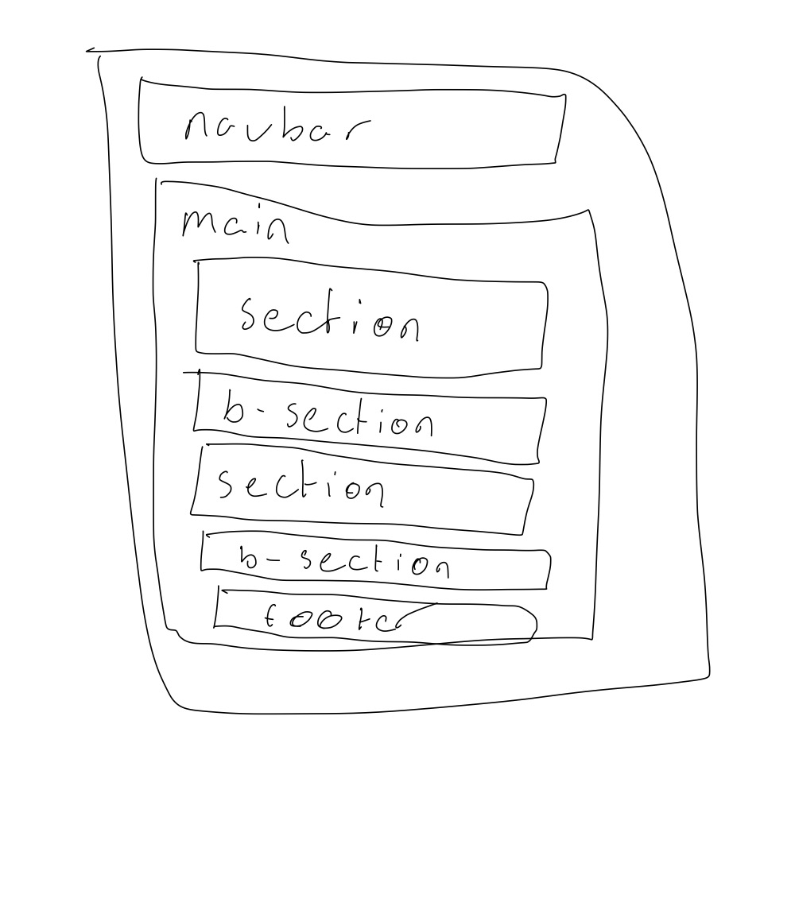
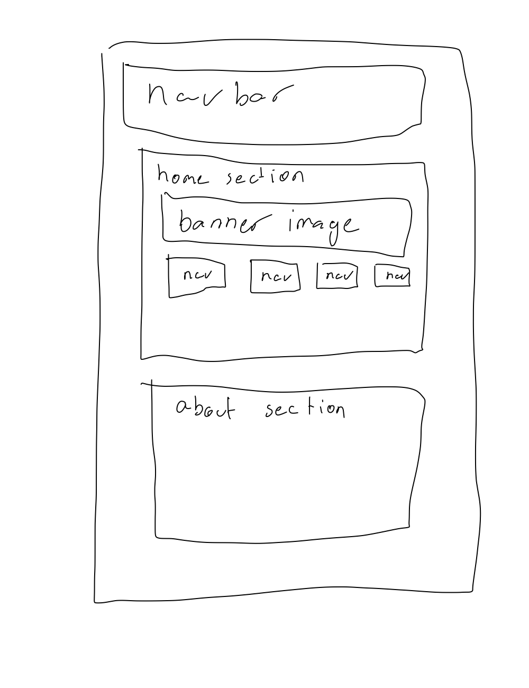

Reflection about my overall design
At first I was not too sure what my webpage should look like, I wasn't too confident about the colour choices and ended up making them variables so I would only have to change one value every time I changed the colours. I know I wanted a light colour scheme and ended up choosing blue.
Designing the layout to the site wasn't that complicated as I mostly had everything in one streamline value. The hardest part was making the navbar and have it work relative to the section content. In the end I found it was much easier to wrap everything in a <main> tag.
Probably couldv'e made the website responsive or I could've added more graphical elements then just text.
Technical aspects of my webpage
The webpage is build in the structure of having a nav component then a sections then a footer. The nav component is wrapped around a <nav> tag to make it clear that it is indeed a nav component. The section components use the <section> tags to seperate each section, and are wrapped around a <main> tag in order to facilitate styling of the them. The footer is also in a <section> tag and is also wrapped inside the <main> tag. Also used the idea of alternating sections, that you would have main sections and b-sections that contrast. Put the styling for the b-sections in a class called '.section-pop' which had black text on white background compared to white text on a blue background. The other thing I did was I made it so the layout took up the entirety of the screen rather then having a big gap around it. In otherwords I set margin to 0 for most of my classes except main to make space for the navbar.
Navbar
For the navbar the plan was to do the most stock standard navbar ever. I copied the generic layout of a bootstrap navbar by having a logo that points to the root of the webpage. Then, I had a few links to #about, past.html, future.html, and this page.
The navbar is made up of a unordered list, anchor tags and a nav tag. The navbar uses css flexbox to quickly align the items in a row or column. The website currently uses nowrap so it isn't functional on smaller screen unfortunately. I used relative padding "em" and gave each link a wide padding (spacing) on the left and right but smaller padding on the top and the bottom for a more slender navbar look.
Sections
First I wrapped everything in a <main> tag as described before. The main reason I used this, was to make everything into a flexbox in order to align item in the center of the page, and to move everything down a little to make room for the navbar. I originally was going to use css-grid to manage the sections and align them in the center, but since css-grid operates in two dimensions and flexbox uses one dimension, and flexbox has a much wider support for legacy browsers I opted to use flexbox instead. The reason it made little difference is my site is a 1-dimensional site containing no sidebars, or columns.
Using the idea of seperating sections I created a class called '.section-pop' which had just an alternative colour scheme but was exactly the same in every other aspect.
Graphics and Images
Most of the graphics I used were either png for graphics or JPEG for compressed images. I mostly used the lowest quality possible. I used 'object-fit: cover;' for displaying most images in order to make sure they fit within a certain range without being heavily manipulated or stretched. I used a relative metric such as percentages for the width of screens, but at the same time I used a fixed metric of pixels in powers of 2 in order to decide the height for the best aesthetic.
Text
I tried to do nothing fancy with the text. I set the font-families to 'Helvetica, Arial, sans-serif' based on the recommended web-safe fonts on the mdn. I increased the font size a little to '1.2em' in order for easier viewing without being too verbose. I also created a span that changes the texts-color to an accent color in order to highlight text, using the class '.mendoza-emphasis' which I used to highlight MENDOZZA! whenever it came up. I also set the width of text sections to a fixed width of 1200px using the aptly named '.text-section' class.
Webpage aesthetics
Overall I probably should've included more graphics, but my site as it is, is mostly centered around text. For the main site I used a colour pallete of around 6 colours. I also tried to make the webpage have lot's of contrasting elements. I planned originally to make the index or home page be mostly graphics and the opposite for the other sections.
Overall layout
I opted for a more streamline design, where all the items are a single column. I used no margins on the divs so that the colour would span the entire screen. Everything is ordered from top to bottom.
Home page
Even though the home page is vastly different from the other pages with a major focus on graphics and less text, it's structure is still overall the same. Having images that act as a menu to highlight certain webpages on the home screen is a very common element of most web pages so I used that concept. I also wanted to have a fairly basic banner on top. But beneath that the structure is exactly the same.
Colours
For colours I used a simple colour scheme of 6 colours, one colour for the ui components such as navbars and such, one colour for highlighted text, one colour for the main background and one colour for the main text colour, one colour for the subsection background, and one colour for subtext background. I really prefer lighter backgrounds, and so always wanted to avoid dark colours. I opted to use a mostly blue background since it was the only colour theme that worked without looking tacky or without needing to include fancy graphical elements. I used off whites or plain whites to have a subtle difference or contrast between the colours you can barely see. I used orange as a highlight colour since it contrasts well with a blue pallet.
Text
With text I wanted it to be centered and padded for easier viewing. I tried not to write massive paragraphs so the content would be much more digestable and easier to read. I also chose to use sans-serif fonts since they are generally accepted as the best font's to use on browsers.
User interaction and engagement
The overall goal of the site was to make it very easily digestable to users. I wanted users to be able to read and perceive the page without having to think too much. The goal was to be simple and not to overwhelm the user. The site had to be easily accessible through the navigation bar, and it had to be very clear what each section was about. Hence the addition of many titles, tables of contents and such.
Webpage accessibility
With the webpage I made sure to use contrasting colours such as black on white, and white on a darker blue. I also used elements such as alt texts for images in order to make sure they were accesible to screen readers. While I included some graphics, I also made sure everything was explained through text for that purpose as well. The website had minimal interaction and really the only interactive elements were scrolling, and clicking links. As such it should not be too difficult for users who have impaired motor skills to access the site.
Footer
The webpage uses images downloaded from icons 8 under the student license agreement.
Lambda icon by Icons8 PixelTrue Web Development illustration by Icons8 Cyborg No Comments illustration by Icons8